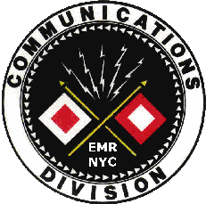
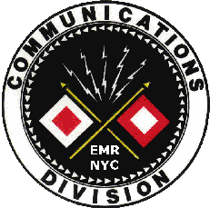
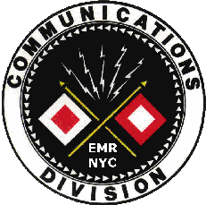
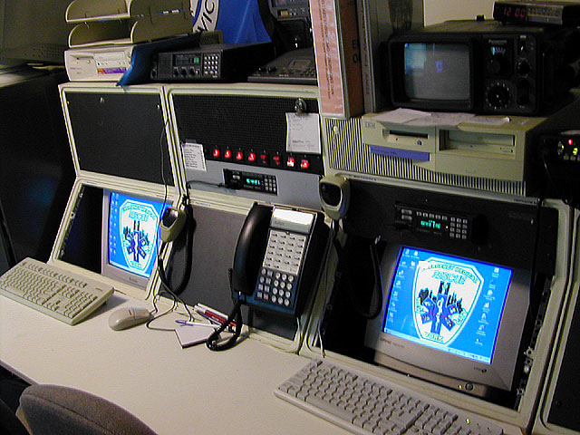
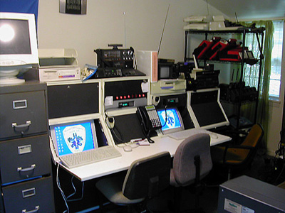
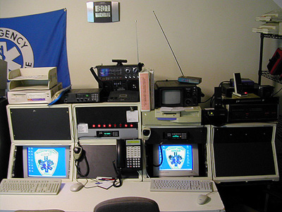
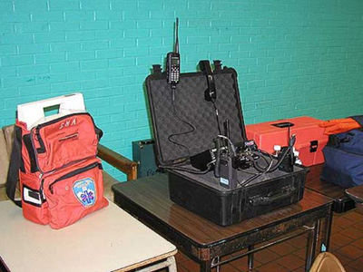
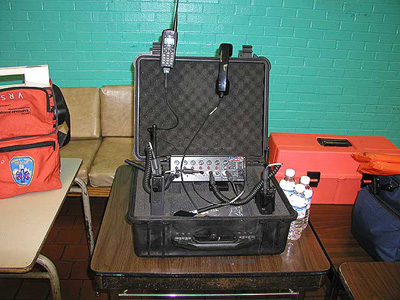

Emergency Medical RESCUE Of NYC
NYC's First Volunteer BLS-D First Response Unit
Communications Division

Emergency Medical RESCUE Communications Center is currently in operation. The Center has the capability to communicate with the Volunteer EMS and Fire Departments in New York City. At this time, we are licensed and are currently in the process of licensing additional frequencies for interoperability throughout the Volunteer EMS and Fire sector.

Communications Center showing dispatch consoles.
 
For our field operations, we are using
the Incident Commander's Radio Interface
(ICRI)
provided by Communications Applied Technology.
 
Show above is the CAT ICRI linking a UHF radio
channel with a VHF radio channel,
and a Nextel at the Incident Commander's operating position.

Cars 4 Causes has partnered with Emergency
Medical Rescue of New York City.
Cars 4 Causes specializes in car donations and your donation through
Cars
4 Causes will help raise money for Emergency Medical Rescue of New York City.
Click the banner below to donate your car today!

Help Emergency Medical Rescue of New York City When You Search or Shop!
 |
 |